Ciempi V4: laboratorio artístico
Rama expansion-v4-arte. Todo es experimental y está pendiente de tu aprobación; el juego, el catálogo y los cuerpos aprobados (AD-017) no cambian.
Abrir desde la raíz del worktree con python3 -m http.server 8830 --bind 127.0.0.1 y luego http://127.0.0.1:8830/docs/expansion-v4/. Informe: INFORME-V4.md.
Probar en el laboratorio (interactivo)
1 · Dragón, rostro v4bSelector de rostro (v1, v4, v4b) en el panel para comparar. Cuerpo original intacto.
2 · Cuncuna, rostro v4bMejillas de pompón y ojos propios; 14 expresiones.
3 · SerpienteRostro propio, sin patas (AD-019) y una zapatilla en la cola.
iter=v1 muestra la primera versión.
4 · CamaleónTorretas con volumen, patas gruesas, cola en espiral y camuflaje según el conjunto.
5 y 6 · Mochilas y zapatos v4Botones «Accesorios v1 / v4» en el panel Vista.
Todo juntoDragón v4 con conjunto mago y accesorios v4; prueba animaciones (A01–A12, E01–E08) y N 0–40.
Láminas
Rostros: expresionesCambia
especie=cuncuna y tipo.
Criaturas: comparaciónTipos: crecimiento, expresiones, accesorios, conjuntos, comer, animacion, camuflaje.
Accesorios: detalleTipos: piezas, detalle, crecimiento, animacion, especies; accesorios=v1 para el antes.
Antes y después
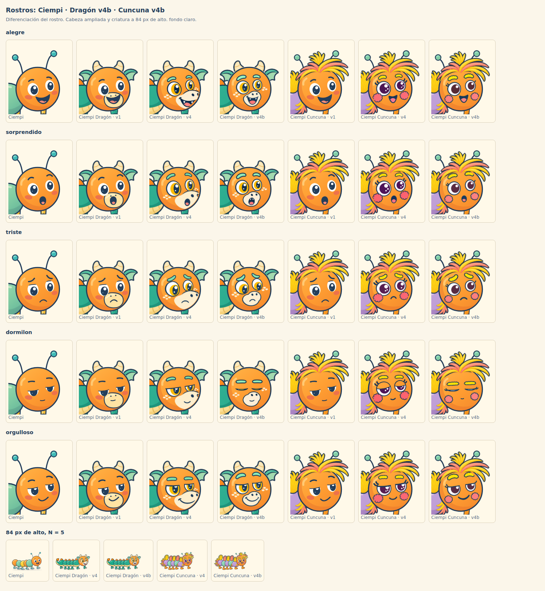
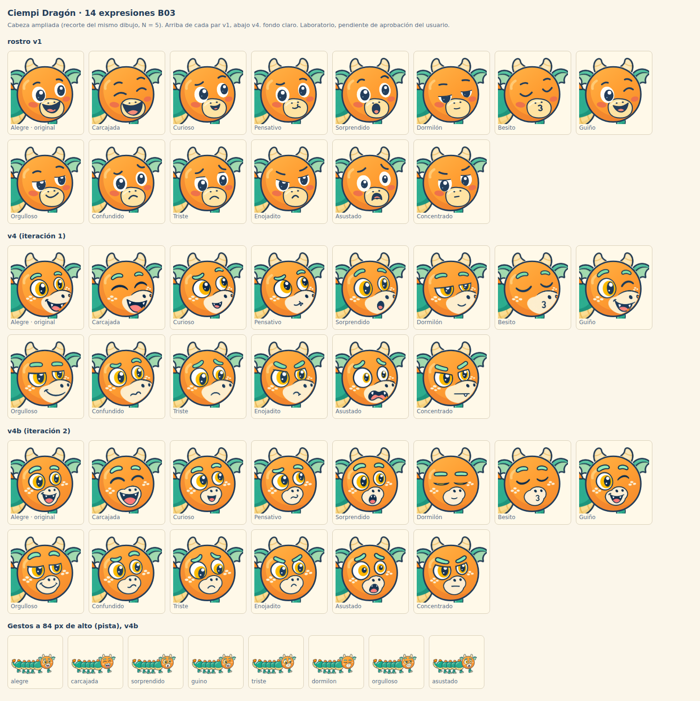
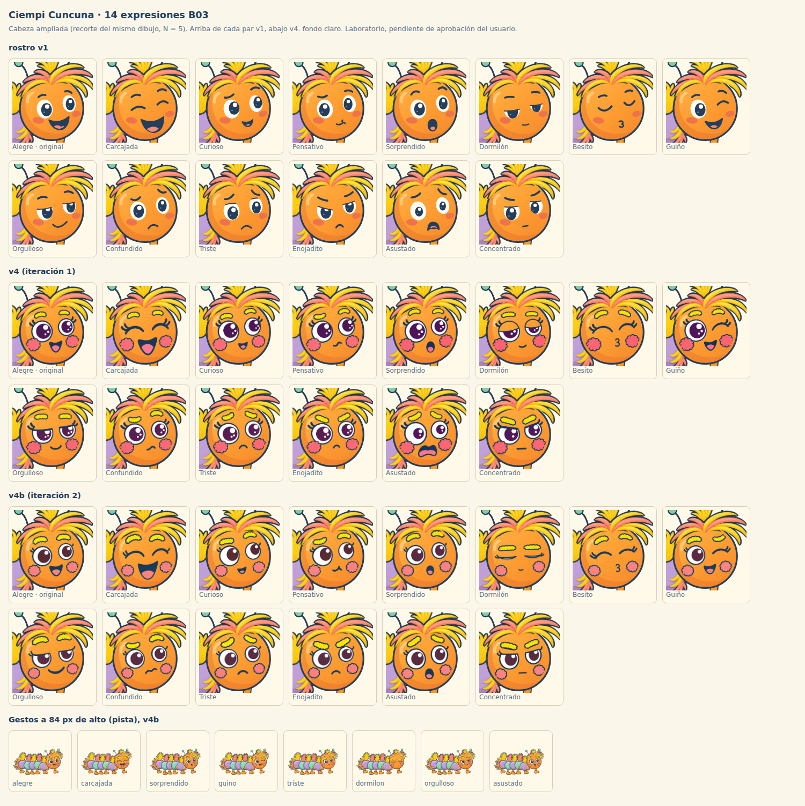
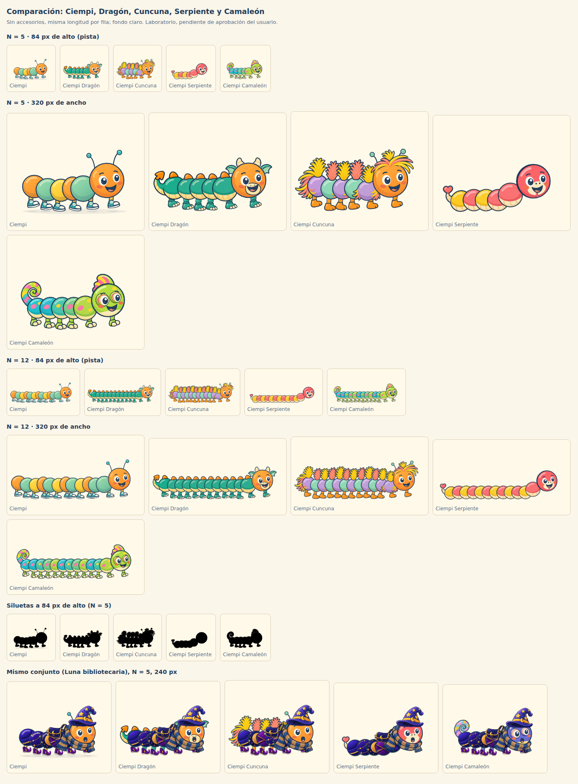
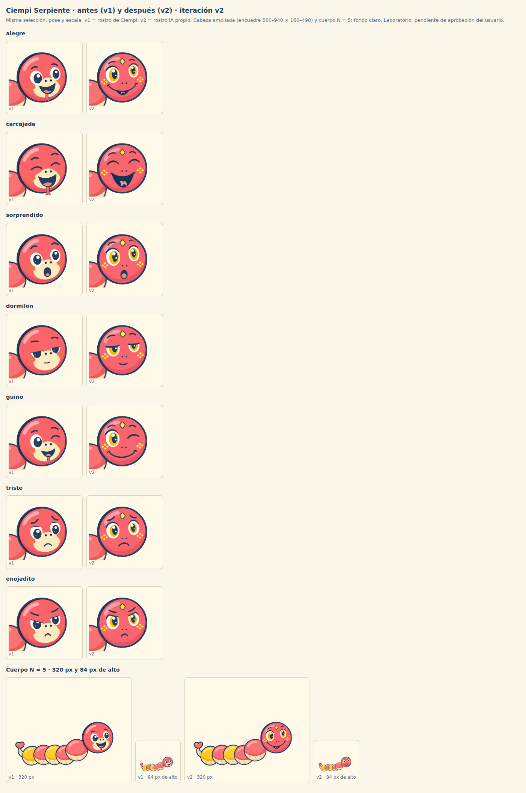
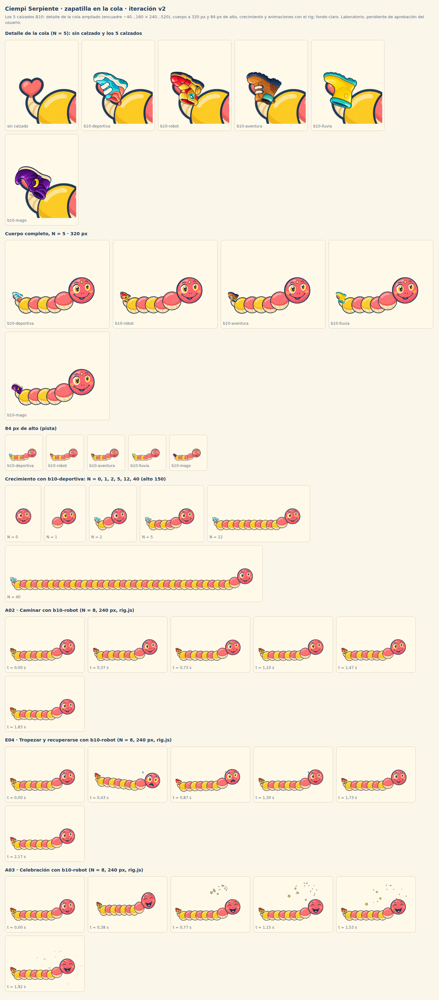
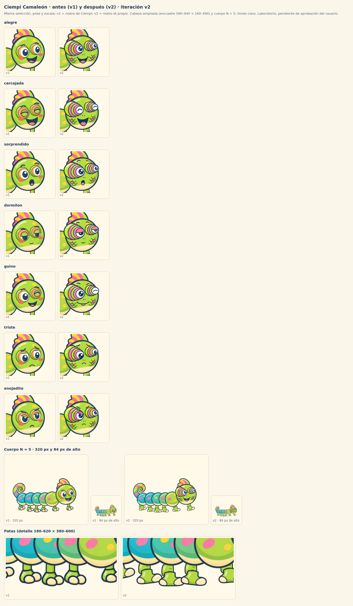
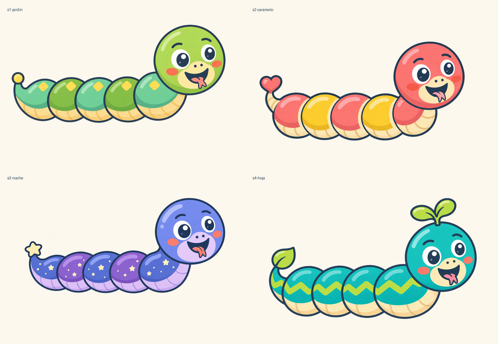
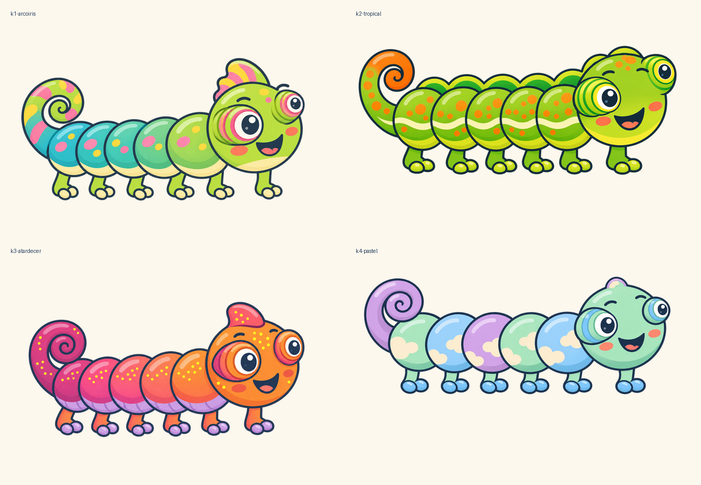
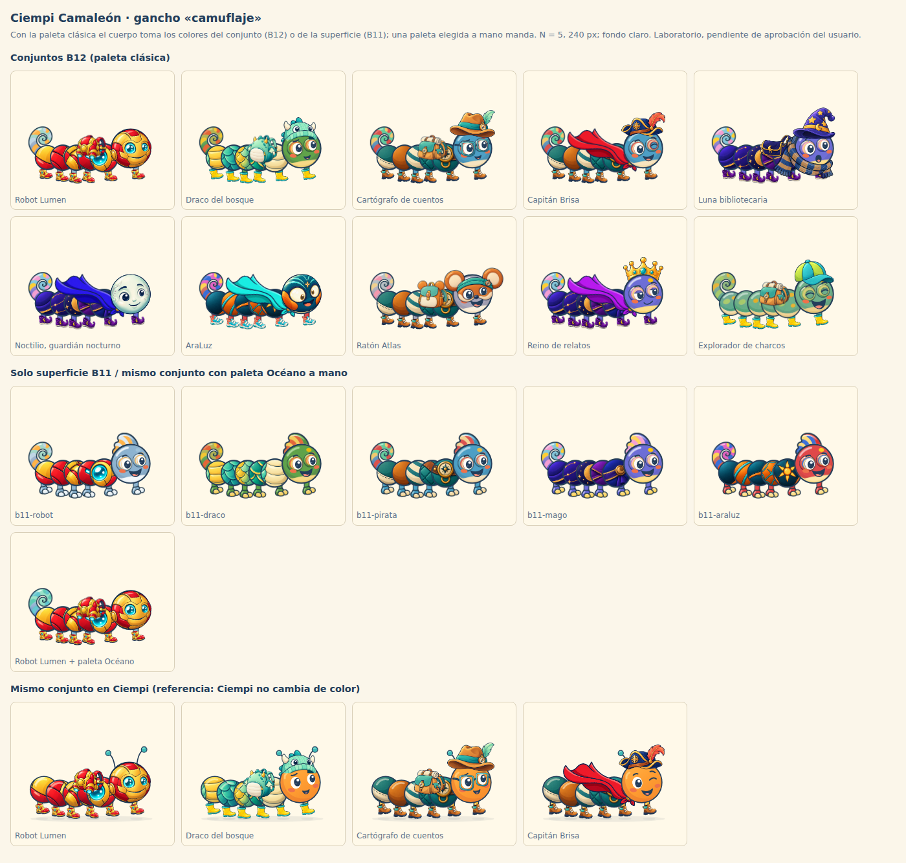
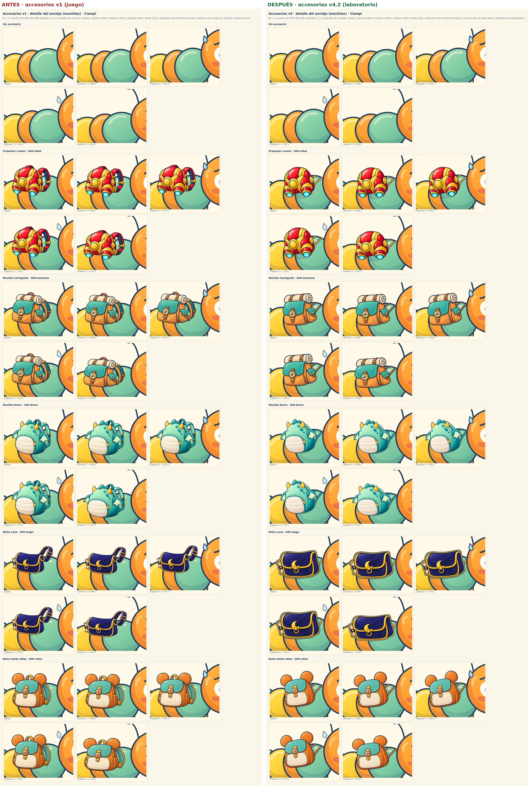
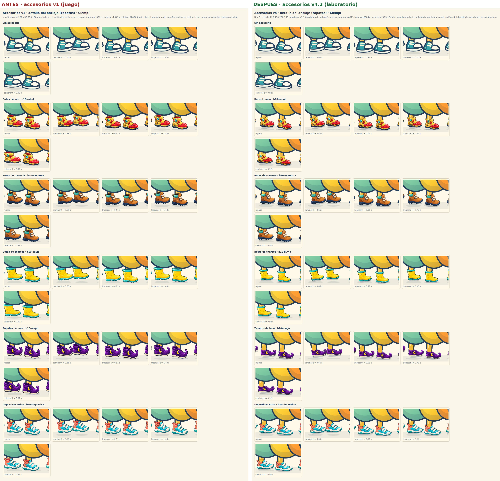
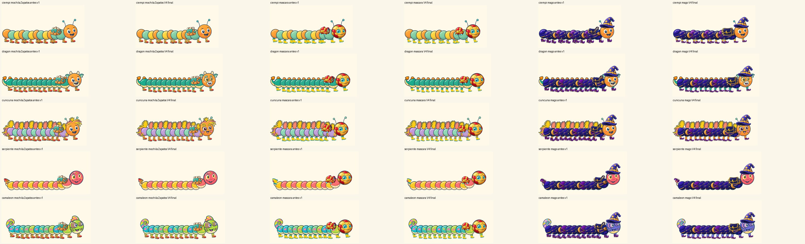